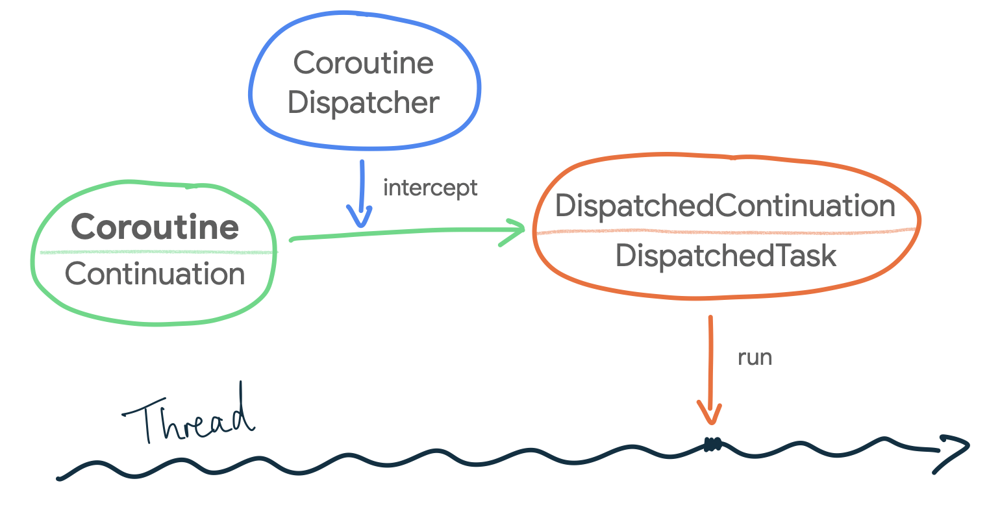

Bridging the gap between coroutines, JVM threads, and concurrency problems
Learn more about how coroutines are executed in the JVM and concurrency problems.
“Coroutines are light-weight threads”, how many times have you read that? Does that mean anything to you? Probably not. Keep reading to learn more about how coroutines are actually executed in the JVM, how they relate to threads, and the concurrency issues that are inevitable when using the JVM threading model.
Coroutines and JVM threads
Coroutines aim to simplify code that executes asynchronously. When talking about coroutines in the JVM, the block of code passed as a lambda to a coroutine builder ultimately gets executed on a specific JVM thread. For example, this simple Fibonacci calculation:
// Coroutine that calculates the 10th Fibonacci number in a background thread
someScope.launch(Dispatchers.Default) {
val fibonacci10 = synchronousFibonacci(10)
saveFibonacciInMemory(10, fibonacci10)
}
private fun synchronousFibonacci(n: Long): Long { /* ... */ }
The above async coroutine’s block of code, that performs a synchronous and blocking fibonacci calculation and saves it to memory, gets dispatched and scheduled for execution in a thread pool managed by the coroutines library, the one configured for Dispatchers.Default. The code will be executed in a thread of the thread pool at some time in the future depending on the thread pool’s policies.
Note that the code above executes in one thread because it doesn’t suspend. It’s possible for one coroutine to be executed in different threads if the execution is moved to a different dispatcher, or if the block contains code that may yield/suspend in a dispatcher that uses a thread pool.
Similarly, without coroutines, you could execute the logic above using threads manually as follows:
// Create a thread pool of 4 threads
val executorService = Executors.newFixedThreadPool(4)
// Schedule and execute this code in one of those threads
executorService.execute {
val fibonacci10 = synchronousFibonacci(10)
saveFibonacciInMemory(10, fibonacci10)
}
While doing things on your own managing thread pools manually is possible, coroutines is the recommended solution for asynchronous programming on Android due to the built-in cancellation support, easier error handling, structured concurrency which reduces the likelihood of memory leaks, and its integration with Jetpack libraries.
Under the hood
What happens from the moment you create a coroutine until it gets executed on a thread? When you create a coroutine using the standard coroutine builders, you can specify on which CoroutineDispatcher to run it on; if not, Dispatchers.Default is used.
The CoroutineDispatcher is in charge of dispatching the execution of a coroutine to a JVM thread. Under the hood, when a CoroutineDispatcher is used, it intercepts the coroutine using this interceptContinuation method that wraps the Continuation (i.e. the coroutine) in a DispatchedContinuation. This is possible because CoroutineDispatcher implements the ContinuationInterceptor interface.
If you read my article about how coroutines work under the hood, you already know that the compiler creates a state machine, and the information of the state machine (e.g. what needs to be executed next) is kept in a
Continuationobject.
In case a Continuation needs to be executed in a different Dispatcher, the DispatchedContinuation’s resumeWith method is in charge of dispatching the coroutine to the appropriate one!
Furthermore, a DispatchedContinuation extends from the DispatchedTask abstract class which, in the JVM implementation, is a type that implements the Runnable interface. Therefore, a DispatchedContinuation can run on a JVM thread! How cool is that? When a CoroutineDispatcher is specified, the coroutine is transformed to a DispatchedTask that is dispatched to be executed on a JVM thread as a Runnable!
And now… How does the dispatch method get called when you create a coroutine? When you create a coroutine using the standard coroutine builders, you can specify how the coroutine starts with the start parameter of type CoroutineStart. For example, you can configure it to start only when it’s needed, with CoroutineStart.LAZY. By default, CoroutineStart.DEFAULT is used which schedules the coroutine for execution according to its CoroutineDispatcher. Bingo!
 Illustration of how the block of code in a coroutine ends up executing in a Thread
Dispatchers and thread pools
You can execute coroutines in any of your app thread pools by converting them to a CoroutineDispatcher using the Executor.asCoroutineDispatcher() extension function. Alternatively, you can use the default Dispatchers that come in the coroutines library.
You can see how Dispatchers.Default is initialized in this createDefaultDispatcher method. By default, the DefaultScheduler is used. If you check out the implementation of Dispatchers.IO, it also uses the DefaultScheduler and allows at least 64 threads to be created on demand. Dispatchers.Default and Dispatchers.IO are implicitly linked together as they use the same thread pool which brings me to the next topic. What’s the runtime overhead of calling withContext with different Dispatchers?
Threads and withContext performance
In the JVM, if there are more threads created than CPU cores available, switching between threads carries some runtime overhead. Context switches aren’t cheap! The OS needs to save and restore the execution context, and the CPU needs to spend time scheduling threads instead of running actual app work. Apart from that, context switches may happen if a thread is running code that blocks. If that’s the case for threads, is there any performance penalty of using withContext with different Dispatchers?
Fortunately, as you could imagine, thread pools manage all of this complexity for us, trying to optimize work to be executed as much as possible (that’s why executing work on a thread pool is better than doing so in threads manually). Coroutines also benefit from this as they’re scheduled in thread pools! On top of that, coroutines don’t block threads, they suspend their work instead! Even more efficient!
The CoroutineScheduler, which is the thread pool used in the JVM implementation by default, distributes dispatched coroutines to worker threads in the most efficient manner. As Dispatchers.Default and Dispatchers.IO use the same thread pool, switching between them is optimized to avoid thread switches whenever possible. The coroutines library can optimize those calls, stay on the same dispatcher and thread, and follow a fast-path.
As Dispatchers.Main is usually a different thread in UI apps, switching between Dispatchers.Default and Dispatchers.Main in coroutines doesn’t come with huge performance costs as the coroutine just suspends (i.e. stops executing in one thread), and gets scheduled to be executed in a different thread.
Concurrency problems in coroutines
Coroutines DO make asynchronous programming easier due to how simple scheduling work on different threads is. On the other hand, this simplicity can be a double-edged sword: as coroutines run on the JVM threading model, they cannot simply escape from the concurrency problems that the threading model entails. Thus, you have to pay attention to avoid this.
Over the years, good practices like immutability have mitigated some of the thread-related issues that you can face. However, there are some cases that cannot be avoided with immutability. The mother of all concurrency problems is state management! In particular, accessing mutable state in a multi-threaded environment.
The ordering of operations in a multi-threaded app is unpredictable. Apart from compiler optimizations that can reorder operations, threads are not guaranteed to be run in a particular order, and context switches can happen at any time. If the necessary precautions are not taken when accessing mutable state, threads could see stale data, lose updates, or suffer from race conditions among other things.
Note that the discussion of mutable state and access order isn’t specific to the JVM. They affect coroutines on other platforms, too.
An app using coroutines is a multi-threaded app by nature. Classes that use coroutines and contain mutable state must take precautions to be predictable, i.e. ensure the code executed in coroutines see the most up-to-date version of the data. In this way, different threads won’t interfere with one another. Concurrency issues can lead to very subtle bugs very hard to debug in your apps, even heisenbugs!
These types of classes are not uncommon. Maybe the class needs to keep the information of the logged-in user in memory, or cache some values while the app is alive. Concurrency issues can still happen in coroutines if you’re not careful! A suspend function using withContext(defaultDispatcher) is not guaranteed to be executed always in the same thread!
Let’s say we have a class that caches transactions made by users. If the cache is not accessed properly, like for example below, concurrency bugs can happen:
class TransactionsRepository(
private val defaultDispatcher: CoroutineDispatcher = Dispatchers.Default
) {
private val transactionsCache = mutableMapOf<User, List<Transaction>()
private suspend fun addTransaction(user: User, transaction: Transaction) =
// CAREFUL! Access to the cache is not protected.
// Concurrency bugs can happen: threads can see stale data
// and race conditions may occur.
withContext(defaultDispatcher) {
if (transactionsCache.contains(user)) {
val oldList = transactionsCache[user]
val newList = oldList!!.toMutableList()
newList.add(transaction)
transactionsCache.put(user, newList)
} else {
transactionsCache.put(user, listOf(transaction))
}
}
}
Even if we’re talking about Kotlin, the book Java concurrency in practice by Brian Goetz is a great resource to learn more about this topic and the intricacies of concurrency in JVM systems. Alternatively, Jetbrains has documentation about shared mutable state and concurrency too.
Protecting mutable state
How to protect mutable state, or find a good synchronization policy, totally depends on the nature of the data and the operations involved. This section is about bringing awareness of the concurrency issues you can face instead of listing all the different ways and APIs to protect mutable state. Nonetheless, here’s some tips and APIs you can start with to make your mutable variables thread-safe.
Encapsulation
Mutable state should be encapsulated and owned by a class. This class centralizes access to the state, and will protect reads and writes with the synchronization policy that better fits the use case.
Thread confinement
A solution can be to restrict read/write access to one thread. Access to the mutable state can be done in a producer/consumer way using a queue. JetBrains has good documentation about this.
Don’t reinvent the wheel
In the JVM, there are thread-safe data structures you can use to protect your mutable variables. For example, for the case of a simple counter, you can use AtomicInteger. Or, to protect the map of the code snippet above, you could use a ConcurrentHashMap. ConcurrentHashMap is a thread-safe, synchronized collection that optimizes the throughput of reads and writes to the map.
Note that thread-safe data structures don’t guard against caller ordering problems, they just make sure memory access is atomic. They help avoid using locks when the logic is not too complicated. For example, they can’t be used in the transactionCache example shown above because the order of operations and the logic between them need thread and access protection.
Also, data in these thread-safe data structures needs to be immutable or protected to prevent race conditions when modifying objects already stored in them.
Custom solutions
If you have compound actions that need to be synchronized, @Volatile variables or thread-safe data structures won’t help! And it’s possible that the built-in @Synchronized annotation is not granular enough to make your use case efficient.
In those cases, you might need to create your own synchronization mechanism using concurrent utilities such as latches, semaphores, or barriers. Other times, you can unconditionally protect multi-threaded access to code using locks or mutexes.
A Mutex in Kotlin has the suspend functions lock and unlock to manually protect parts of your coroutines code. Conveniently, the extension function Mutex.withLock makes it easier to use:
class TransactionsRepository(
private val defaultDispatcher: CoroutineDispatcher = Dispatchers.Default
) {
// Mutex protecting the cache mutable state
private val cacheMutex = Mutex()
private val transactionsCache = mutableMapOf<User, List<Transaction>()
private suspend fun addTransaction(user: User, transaction: Transaction) =
withContext(defaultDispatcher) {
// Mutex makes the read&write cache operation thread safe
cacheMutex.withLock {
if (transactionsCache.contains(user)) {
val oldList = transactionsCache[user]
val newList = oldList!!.toMutableList()
newList.add(transaction)
transactionsCache.put(user, newList)
} else {
transactionsCache.put(user, listOf(transaction))
}
}
}
}
As a coroutine using Mutex suspends execution until it can proceed, it’s much more efficient than a JVM lock that blocks the thread. Be careful about using JVM synchronization classes in coroutines as that can block the thread in which the coroutine is being executed and create liveness issues.
The block of code passed to a coroutine builder ends up executing on one or multiple JVM threads. And as such, coroutines run on the JVM threading model with all its constraints. With coroutines, it’s still possible to write vulnerable wrong multi-threaded code. So, watch out for access to shared mutable state in your code!